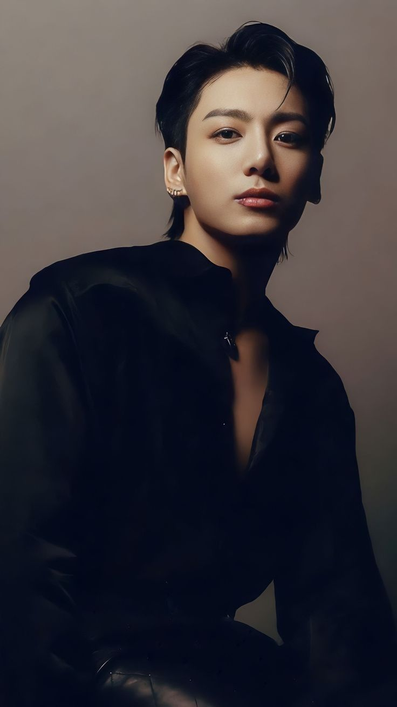
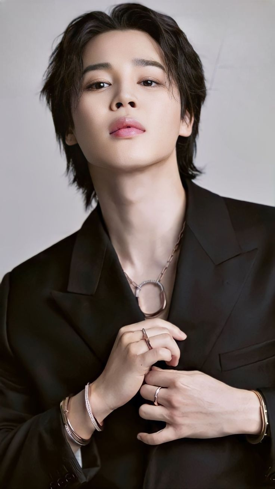
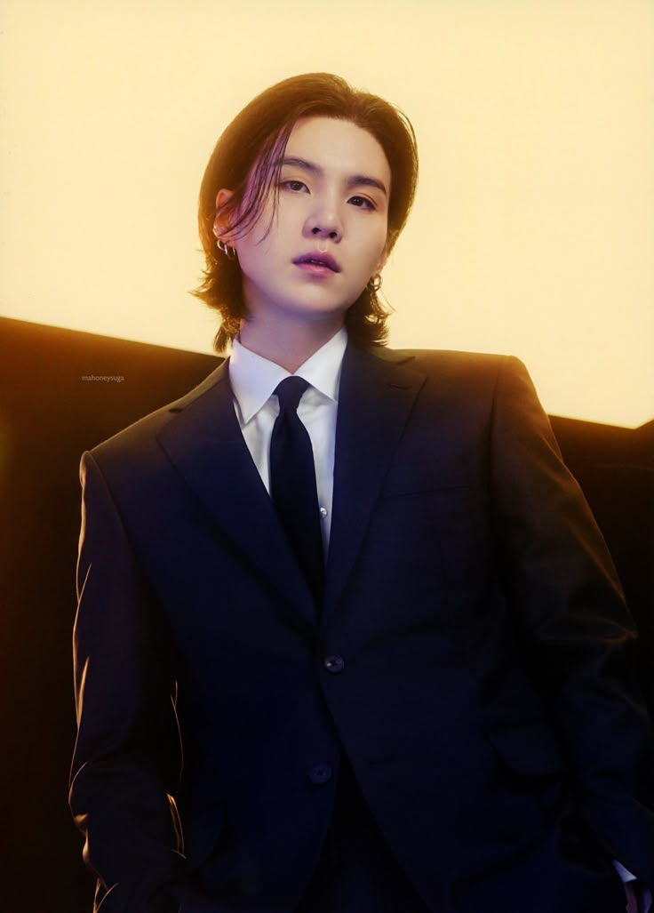

Bangtan Sonyeondan (BTS)
BTS, also known as the Bangtan Boys, is a South Korean boy band formed in 2010. The band consists of Jin, Suga, J-Hope, RM, Jimin, V, and Jungkook, who co-write or co-produce much of their material.
Active from: 2013
Record labels: Hybe Corporation, Big Hit Music ·
Awards: American Music Award for Artist of the Year ·
Also known as: Bangtan Boys; Bangtan Sonyeondan; Beyond the Scene; Bulletproof Boy Scouts
|

|
Jungkook
Jeon Jung-kook, known mononymously as Jungkook, is a South Korean singer and songwriter. He rose to prominence as a member and vocalist of South Korean boy band BTS.
Born: September 1, 1997 (age 27 years)
Mandeok-dong, Busan, South Korea
Full name: Jeon Jung-kook
|
|
|
V
Kim Tae-hyung, known professionally as V, is a South Korean singer and songwriter. In 2013, he made his debut as a member of the South Korean boy band BTS, under Big Hit Entertainment.
Born: December 30, 1995 (age 29 years), Bisan-dong, Daegu, South Korea
Music group: BTS (Since 2013)
Height: 1.79 m
Full name: Kim Tae-hyung
Genres: K-pop; R&B; neo soul; indie pop; jazz
|
|

|
Jimin
Park Ji-min, known mononymously as Jimin, is a South Korean singer, songwriter, and dancer. In 2013, he made his debut as a member of the South Korean boy band BTS, under the record label Big Hit Entertainment.
Born: October 13, 1995 (age 29 years), Hoedong-dong, Busan, South Korea
Full name: Park Jimin
Height: 1.74 m
Siblings: Park Jihyun
|
|

|
Suga
Min Yoon-gi, known professionally by his stage names Suga and Agust D, is a South Korean rapper, songwriter and record producer. He debuted as a member of the South Korean boy band BTS in June 2013 under Big Hit Entertainment.
Born: March 9, 1993 (age 31 years), Taejeon-dong
Full name: Min Yoon-gi
Height: 1.74 m
Music group: BTS (Since 2013)
|

|
Jhope
Jung Ho-seok, known professionally as J-Hope, is a South Korean rapper, singer-songwriter, dancer, and record producer. He made his debut as a member of South Korean boy band BTS in 2013, under Big Hit Entertainment. J-Hope released his first solo mixtape, Hope World, in 2018.
Born: February 18, 1994 (age 31 years), Ilgok-dong, Gwangju, South Korea
Music group: BTS (Since 2013)
Full name: Jung Ho-seok
Height: 1.77 m
Siblings: Jung Ji-woo
|
|
|
Jin
Kim Seok-jin, known professionally as Jin, is a South Korean singer, songwriter, and member of the South Korean boy band BTS. Jin has released three solo tracks with BTS: "Awake" in 2016, "Epiphany" in 2018, and "Moon" in 2020, all of which have charted on South Korea's Gaon Digital Chart.
Born: December 4, 1992 (age 32 years), Anyang-si, South Korea
Height: 1.80 m
Full name: Kim Seok-jin
Music group: BTS (Since 2013)
Siblings: Kim Seok-joong
|
|
|
RM
Kim Nam-joon, known professionally as RM, is a South Korean rapper, songwriter, and record producer. He is the leader of South Korean boy band BTS, under Big Hit Entertainment.
Born: September 12, 1994 (age 30 years), Sangdo-dong, Seoul, South Korea
Full name: Kim Nam-joon
Height: 1.81 m
|